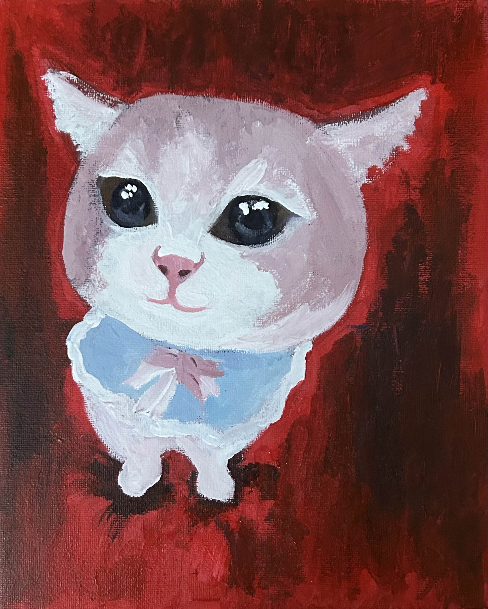

Inside (2024) - Art of the inside of an industrial room from a view of a square. See the process here. Updated Sept 2024.

Attention (2023) - An exercise in fine detail with colored pencils. A self-portrait and artistic rendering of a transformer model's architecture.
Freedom from Fear (April 24 2025) - Portrait of me when I was a baby. Memorial to my grandma and grandpa. Tape transfer of newspapers on top left. 2nd place Congressional Art Competition in MA 5th District.

Memory (2024) - My first ink! Includes details like a phylogenetic tree of the lionfish to an LSTM.
Exit (April 2025) - Oil paint rendering of an image from when I did ballet as a child. Created for fun in AP Art Class. I'm quite proud of it.

Primary (2020) - One of my earliest full pieces. Still holds up well.

Growth (2022) - My childhood piggy bank with sunflower seeds underneath.
Home (2023) - Background is Boston; the cat belongs to a friend.
Sheep (2024) - Volunteered at Meadow Mist farm and received raw sheep wool that I washed and carded. Acrylic on 12 canvases.
Cat in Pipes, or Cat #4 (Dec 2024) - Multicolored cat drawn with colored pencil. The cat is surrounded by black ink linocut-carved and printed pipes.
Heating the Home (Dec 2024) - Sketch of Giustiniani’s Hestia. Designed and carved linocut stamps of pipes and arrows to mimic HVAC system designs.
Psyche's Sword (Dec 2024) - Blue monochromatic Psyche entering Cupid’s garden with the Sword of Damocles above her head. Stamped with linocut pipe and arrow stamps in black-blue ink.

Hammock (2024) - Another black and white piece inspired by events at ASPR '24.

Reflection (2024) - A cat looking into mirrors, created as part of someone's Science Olympiad Optics setup.
Pigeon (2024) - Sunprint paper and tape transfer collage on colored pencil & paper.
Papermaking (Jan 2025) - I made my own paper with a mould & deckle and old schoolwork. I drew images of papermaking in the Han Dynasty (where it originated). References: Tiangong Kaiwu, http://en.chinappi.org/paps/20130912100551821111.html, https://www.inkston.com/stories/guides/xuan-paper-making/

Stairs (2024) - Acrylic on hardboard, reference image of friend at Commadant's House in Boston. Placed on Lexington High's roof.
Nv Wa Skyphos (2024) - My take on 女娲补天.

Sundown (2024) - Brain-controlled wings. Pose inspired by Morisot's “Woman at Her Toilette”. See process here.
{kind=link}

Dreams (2023) - Practice in red/white/blue contrasts. Features Cary Memorial Library.

Produce (2020) - One of my earliest full pieces, still appreciated today.

Swan (2022) - Printing practice from art class.
Landscape (Jan 2025) - Acrylic on panel, I saw a beautiful sunrise during a road trip
Food (Feb 2025) - Acrylic on paper, reference ramen was from a shop in Britain (it was delicious!)
Caterpillar (Mar 2025) - Oil pastel on paper, done during art class, inspired by an image of saturniidae larvae (image credit: Marco Fisher Photography) sent in scioly discord server.
Dog (Mar 2025) - Acrylic on panel, done during art class, portrait of friend's dog.

Cat #6 (Mar 2025) - Acrylic on panel, done during art class, given to friend for birthday.
Cat #5 (Mar 2025) - Acrylic on panel, done during art class.
Cat #4 (Feb 2025) - Acrylic on panel, done during art class, given to my friend for her birthday!

Cat #3 (Dec 2024) - Acrylic on panel, done over two hours at home during break and used as the prize for LexMACS' 2024 CTF scavenger hunt.
Cat #2 (Nov 2024) - Acrylic on panel, also done during a half day in art class and given to physics teacher.
Cat #1 (Nov 2024) - Acrylic on panel, done during a half day in art class and given to stats teacher.